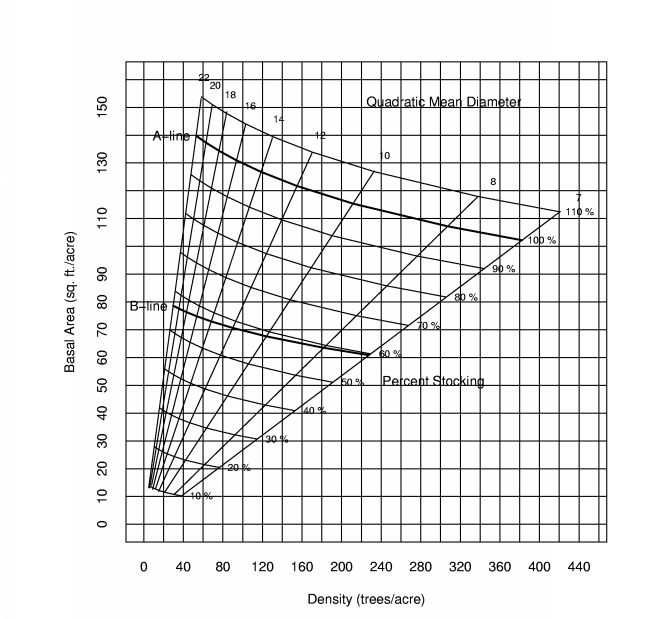

Stand Stocking
Stand stocking is a measure of site occupancy. It is often defined as a
maximum average stocking. This is often presented as a relative index
(percent stocking).
Gingrich Stocking Charts
The Gingrich Diagram was present in 1964, in conference proceedings
and again in 1967 in Forest Science. This diagram illustrates the
relationship between basal area per acre, density (trees per acres) and
the quadratic mean diameter (the diameter of the tree of average basal
area). The A-line is based on the normal stocking concept from normal
yield tables. Growth in stands above 100% is considered to
slow for normal forest management. The B-line is the point of crown
closure of trees with a maximum crown width. A stand on the B-line
is thought to have trees with no competition, yet no space wasted.
The C-line is an estimate based on normal yield table of the lowest stocking
that will grow to the B-line within ten years.

Figure 1: Gingrich Stocking Diagram
Visual Basic
R Statistical Package Code
References
Gingrich, S. F. 1967. Measuring and evaluating stocking and
stand density in Upland Hardwood forests in the Central States. For.
Sci. 13:38-53.
Husch, B., T. W. Beers and Kershaw, Jr., J. A. . 2003. Forest Mensuration. Fourth Edition. John Wiley and Sons, New York 402 p.
Kershaw, Jr, J. A. and B. C. Fischer. 1991. Maximum size-density
relationships for sawtimber-sized mixed upland central hardwoods.
In: "The 8th Annual Central Hardwoods Conference", L. H. McCormick
and K. W. Gottschalk eds. USDA, Forest Service, Northeastern Forest
Experiment Station, General Technical Report, NE-148, pp. 414-428.
Krajicek, J. E. and K. A. Brinkman and S. F. Gingrich. 1961.
Crown competition-a measure of density, For. Sci. 7:35-42.
Larsen, D. R. Dan C. Dey and T Faust 2010. A Stocking Diagram for Midwestern Eastern Cottonwood-Silver Maple-American Sycamore Bottomland Forests. Northern Journal of Applied Forestry 27(4)132-139.961.
McGill, D. W. and R. Rogers, A. J. Martin, and J. S. Johnson. 1961. Measuring Stocking in Northern Red Oak Stands in Wisconsin,
Northern Journal of Applied Forestry 16(3):144-150.
|

{kind=link}